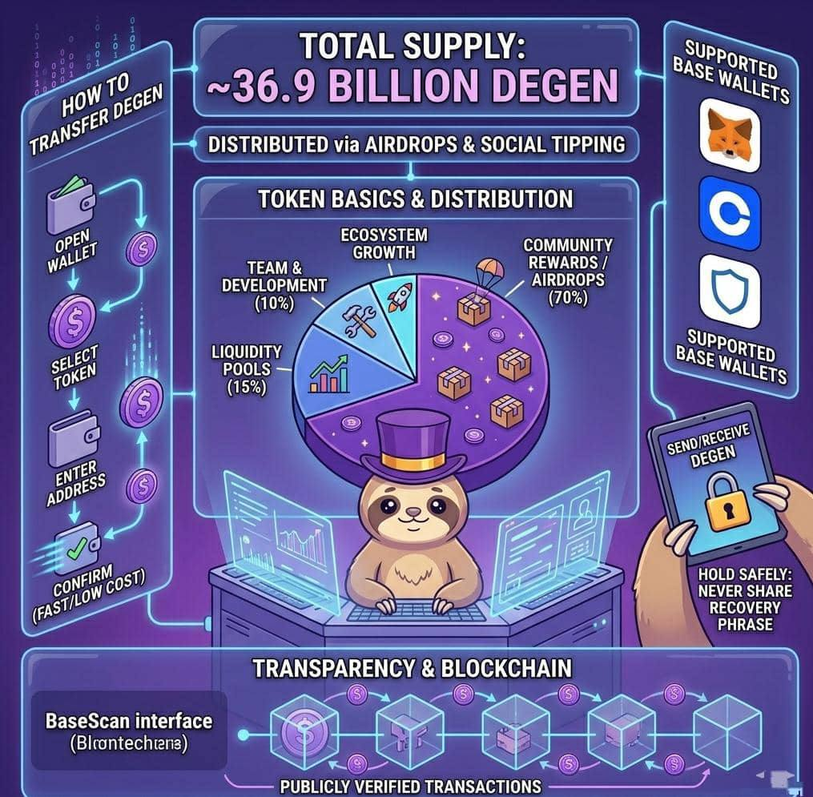

Token Basics
$DEGEN token supply, distribution, wallets, and how to hold or transfer.
This section explains the basic information about Degen (DEGEN) including how many tokens exist, how they were distributed, where you can store them, and how to send them to others.
Every cryptocurrency has a maximum number of tokens that can exist.
This is called the total supply.
For DEGEN:
Total supply: about 36.9 billion tokens
These tokens exist on the Base network.
This means the system cannot suddenly create unlimited tokens.
Having a fixed supply helps maintain predictability and transparency in the ecosystem.
Instead of a typical crypto launch with a big presale, DEGEN focused heavily on community distribution.
The token was mainly distributed through airdrops.
Early Distribution
When the token launched in January 2024, the first airdrop distributed 15% of the total supply to active users in the /degen channel on Farcaster.
Later distributions continued to reward community members.
Overall Allocation (Simplified)
The token supply is roughly divided like this:
- Community rewards / airdrops: majority of tokens
- Liquidity pools: tokens used for trading markets
- Team and development: smaller portion for builders
- Ecosystem growth: tokens used for future rewards and projects
In total, around 70% of the supply was planned for the community, reinforcing DEGEN's community first philosophy.
This distribution model helps ensure the token is owned by thousands of users rather than a few insiders.
Inside the ecosystem, $DEGEN has several main uses.
1️⃣Creator Rewards:
People can tip creators who post valuable or entertaining content.
2️⃣Community Incentives:
Tokens reward people who participate in the ecosystem.
3️⃣Social Interaction:
The token powers on chain social activity such as tipping and rewards.
4️⃣Trading
Users can buy or sell the token on crypto exchanges.
As the ecosystem grows, $DEGEN may also support more apps, tools, and services.
To store $DEGEN, users need a crypto wallet that supports the Base network.
Common examples include:
- MetaMask
- Coinbase Wallet
- Trust Wallet
A wallet allows you to:
- store your tokens
- send tokens
- receive tokens
- connect to apps
Unlike traditional banks, the wallet owner controls the funds directly.
Holding crypto simply means keeping the token in your wallet without selling it.
To hold $DEGEN safely:
- Create a wallet that supports the Base network.
- Secure your private keys or recovery phrase.
- Never share your recovery phrase with anyone.
- Verify token contract addresses before sending or receiving tokens.
Good security practices protect users from scams or wallet theft.
Sending $DEGEN works similarly to sending any other cryptocurrency.
Steps:
- Open your crypto wallet.
- Select DEGEN token.
- Enter the receiver's wallet address.
- Choose the amount.
- Confirm the transaction.
Because DEGEN runs on Base, transactions are usually fast and low cost.
This makes it ideal for:
- tipping
- small payments
- social rewards
Every $DEGEN transaction is recorded on the blockchain.
This means anyone can check transactions using a blockchain explorer like:
BaseScan
This transparency ensures that:
- token supply can be verified
- transfers are publicly recorded
- the system cannot be secretly changed
